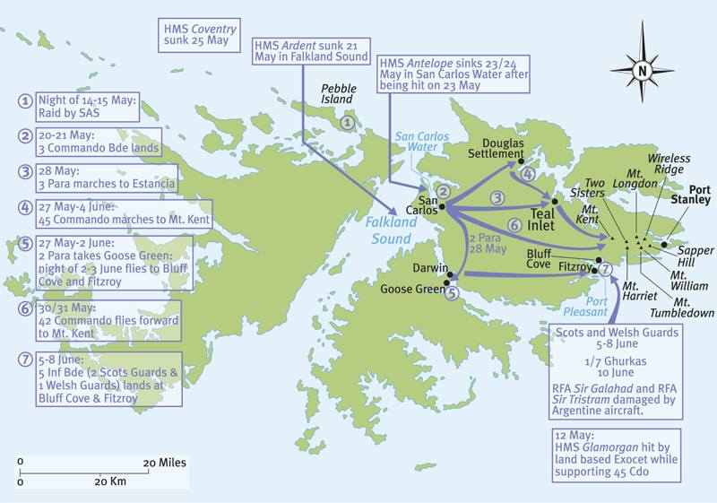
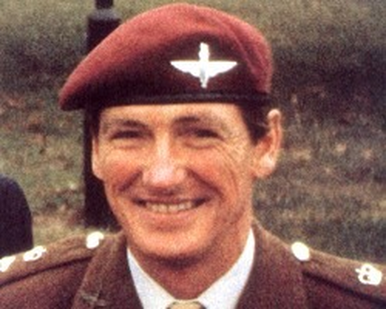
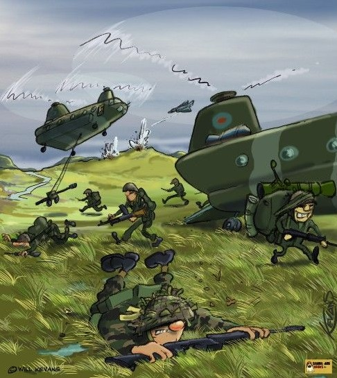
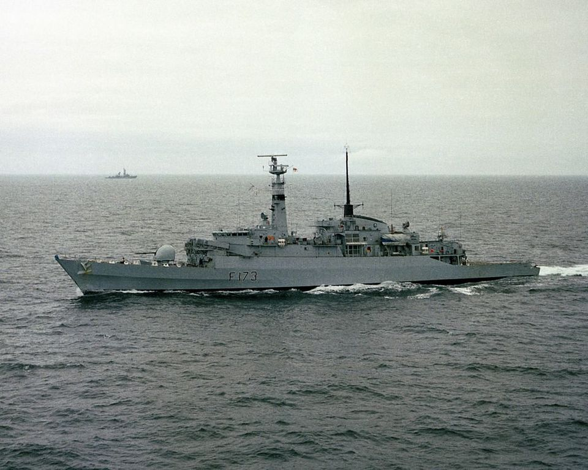
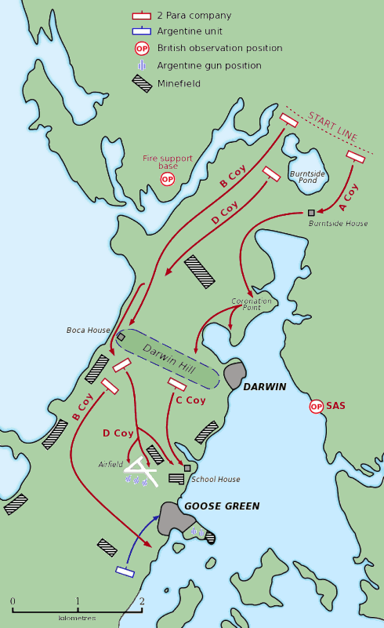
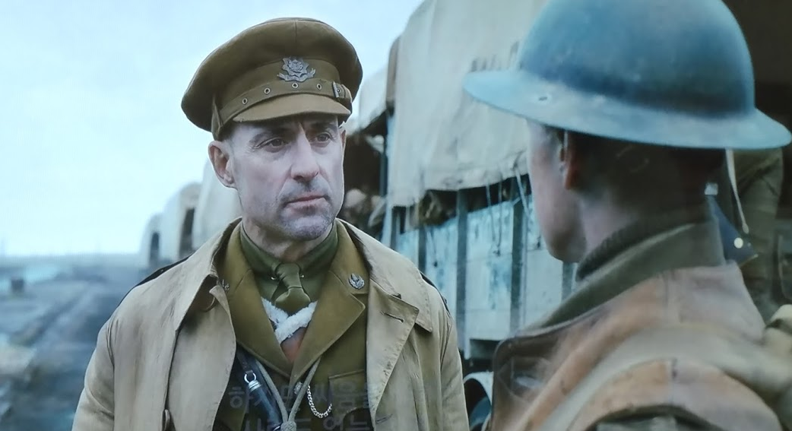
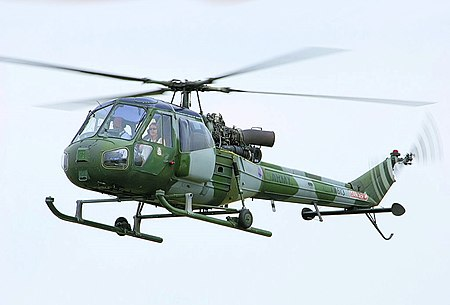
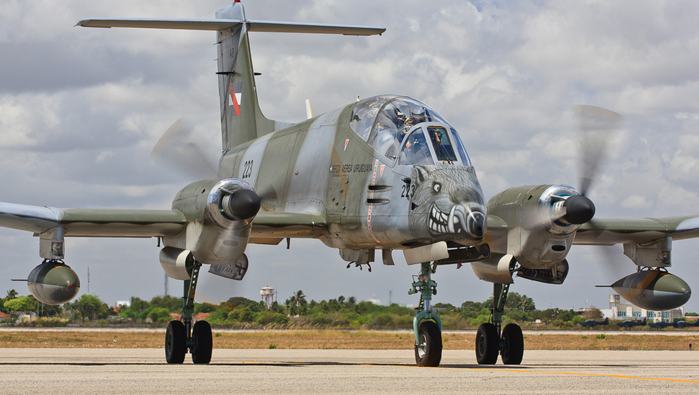

포클랜드 전쟁 잡담 - 첫 지상전, 구스그린(Goose Green) 전투 (상)
게시: 2022-05-19T06:30:40+09:00
<싸우지 않아도 되었던 전투> 1982년 5월 21일 산 카를로스에 상륙한 영국군은 병력과 군수품 하역 속도도 느린데다 일단 교두보 확보가 우선이었으므로 5월 25일까지 산 카를로스 일대에 참호를 파는 등 진지 강화와 정찰 정도만 수행. 왜 당장 진격을 하지 않았을까? 당장 아르헨티나 지상군이 진을 친 곳은 크게 2곳이었는데, 하나는 섬 반대편에 있는 주목표인 Port Stanley, 나머지 하나는 남서쪽에 있는 지협에 위치한 Goose Green. 영국군은 항구와 공항이 있는 포트 스탠리만 함락시키면 나머지 아르헨티나군은 그냥 굶겨죽일 수 있으므로 신경쓰지 않아도 된다고 판단. 특히 구스그린에 있는 아르헨티나군은 영국군이 북쪽으로 빙 돌아가거나 헬리콥터로 이동하면 영국군의 작전에 아무런 영향을 끼치지 못한 채 그냥 쓸데없이 분산된 적이므로 그대로 놔두는 것이 좋다고 판단. 다만 만에 하나라도 구스그린에 있는 애들이 도보로 이동하여 산 카를로스를 공격할까봐 방어진지를 구축한 것. 그리고 무엇보다 헬기로 이동하려면 SS Atlantic Converyor에 실린 4대의 시누크를 비롯한 10여대의 헬기들이 필요. 그것들은 곧 이쪽으로 날아올 예정. 그러는 와중에 영국 해군은 아르헨티나 공군의 습격에 큰 피해를 입었고, 특히 5월 25일 HMS Coventry와 SS Atlantic Converyor가 격침된 사건은 큰 경종을 울림. 영국 내에서 '이거 우리가 지고 있는 것 아니냐'라는 아우성이 터져나오기 시작한 것. 그러다보니 '그냥 협상하자'라는 목소리가 커지기 전에 빨리 뭔가 승전보를 울려야 한다는 목소리가 정부 내에서 커지면서 민간 각료들이 영국 원정군에게 '뭐라도 좀 해봐'라는 압력을 넣음. 결국 5월 28~29일에 벌어져 영국군 약 100명, 아르헨군 약 200명의 사상자를 낸 구스그린 전투는 '싸우지 않아도 될 싸움을 정치적 목적 때문에 싸우게 된 전형적인 케이스.

<"너 고소!"> 구스그린을 공격하여 점령하라는 명령을 받은 것은 제2 공수연대 (2 Para). 이유는 그 부대가 구스그린에서 '가장 가까왔기 때문'. 이 부대는 약 700명 미만으로 구성되어 있었는데, 놀라운 부분은 구스그린에 아르헨티나군이 몇 명이나 있었는지 아무도 몰랐다는 것. 여단 정보부가 항공 정찰 등으로 내린 결론은 3개 중대 약 500명 정도가 주둔해 있다는 것이었으나, 특수부대 SAS가 현장에 접근하여 정찰해보고 내린 결론은 1개 중대 약 150명이 있다는 것. 2 Para의 지휘관인 Herbert "H" Jones 중령은 현장을 직접 목격한 SAS의 보고가 맞을 거라고 판단. 실제로는 제25 보병연대와 제12 보병연대의 중대들, 그리고 공군 대공포 부대가 포함된 약 1100명 정도가 있었음. 그런데 공격 준비를 하고 있는 도중에 BBC World Service에서 '곧 2 Para가 구스그린을 공격할 예정, 채널 고정!'이라는 방송이 나옴. 지휘관 존스 중령은 '국영방송 BBC가 이적행위를 한다'라며 BBC를 고소할 거라며 분노. 그러나 실제로는 전날인 27일 저녁에 20대의 Sea King 헬리콥터들이 구스그린 코 앞까지 3문의 야포와 탄약 등을 실어나르면서 굉장히 시끄러웠기 때문에 아르헨티나군으로서는 그걸 모른 척 할래야 모를 수가 없었던 상황. 물론 아르헨티나군도 BBC를 열심히 보고 있긴 했음. 고소할 거라던 존스 중령은 이 전투에서 전사했기 때문에 실제로는 고소가 이루어지지 않았음.

<술잔의 술이 식기 전에 돌아오겠...> 전략적으로도 아르헨티나군이 구스그린에 대규모 병력을 배치할 이유가 전혀 없었음. 만약 했다면 그건 진짜 전략전술을 모르는 애송이들이 쓸데없이 여기저기 병력을 분산시켜 놓는 행위. 아르헨티나 애들이 그렇게 멍청할 것 같지는 않았으므로 거기에는 끽해야 3개 중대가 배치되어 있을 것이라고 영국군도 판단. 그래서 영국군도 700명도 안 되는 소규모 대대급 부대인 2 Para를 보낸 것. 구스그린까지는 21km 행군 거리였으니 최소 하루는 행군 및 정찰 등으로 다 소모될 예정이었음에도 여기로 떠날 때 2 Para는 딱 2일치의 탄약과 식량만 들고 감. 게다가 어차피 새벽 3시 경에 공격을 시작할 예정이었으므로 아예 슬리핑 백을 두고 감. 그냥 해가 중천에 뜨기 전에 모든 것을 끝내겠다는 호기. 견인포도 딱 3문만 동원했고 그 포탄도 총 960발, 그러니까 포 1문당 320발만 가져감. 항모에서 출격할 공군 Harrier GR.3들의 근접지원 뿐만 아니라, 거기가 지협인지라 만 깊숙이 침투한 영국 프리깃함 HMS Arrow가 4.5인치 주포로 함포 사격을 해줄 것이므로 그 정도면 충분하다고 판단한 것. 이렇게 포병 전력을 적게 가져간 원인 중 하나는 물론 SS Atlantic Conveyor의 침몰로 인해 야포와 탄약을 수송해줄 헬기들이 남대서양 바닥에 가라앉았다는 것이긴 했음. 아래 만화는 애틀랜틱 컨베이어가 침몰하지 않았다면 쉽게 이동했을 영국군의 행복한 상상도.

한편, 아르헨티나군은 이런저런 병력 다 합해 1천이 넘었고, 3문의 105mm 곡사포가 있었으며, 특히 공군 대공포대 소속의 20mm Rheinmetall 대공기관포 6문과 Oerlikon 35 mm 대공기관포 2문이 있었음. 나중에 드러나지만 특히 저 대공포들이 지상군을 향해 불을 뿜었던 것이 영국군에게 큰 피해를 주었음. 거기에 포트 스탠리에서 발진하는 프로펠러 공격기 Pucará들이 폭탄과 로켓을 쏟아부을 수 있었음. 당연히 아르헨티나군은 유리한 언덕 능선을 차지하고 미리 참호를 파 두었음.
<모두에게는 계획이 있다... 쳐맞기 전까지는> 2 Para 지휘관 존스 중령은 엄격한 통제주의자. 그는 꽤 복잡하면서도 정교한 공격 계획을 미리 짜놓고 있었으며 각 소대 단위로 누가 언제 어디까지 전진하여 어느 목표물을 점령할지 순서를 세부적으로 짜놓았음. 가령 A중대는 주요 목표물인 Burntside House를 가장 먼저 점령하게 되어 있었으나, 다른 부대들이 목표를 각각 완수하기 전까지는 그냥 그 집 건물에서 대기하도록 지시됨. 주변에 아르헨티나군이 있든 없든 중대장이 현장에서 상황에 따라 더 좋은 위치로 이동하거나 하는 것을 엄격하게 금지시키면서 오직 작전 계획에 따라 움직이도록 함. 그러나 뭐든 계획대로 돌아간다면 그건 영국군이 아님. 가령 새벽 3시에 정확하게 HMS Arrow의 함포 사격이 시작되면서 전투가 개시될 예정이었으나 10분 20분이 지나도록 함포 사격이 시작되지가 않음. 애로우는 35분이나 지나서야 비로소 포격을 시작. 늦었어도 없는 것보다는 나아서 90분 동안 22발의 조명탄과 함께 135발의 고폭탄을 쏘아붙였음. 그러나 영국 해군이 하는 일이 다 그렇지 뭐. 아르헨티나군 참호나 진지는 하나도 건드리지 못하고 90분 동안 엉뚱한 곳만 두들겨 댐.

90분의 화려한 함포 사격이 끝나자 비로소 영국군의 각 중대들은 진격을 시작했는데, 그래도 처음에는 진격이 나쁘지 않았음. 아직 해가 뜨기 전이라 (남반구는 그때 초겨울이라 해가 늦게 뜸) 어두워서 서로가 서로를 잘 못봤기 때문. 그러나 HMS Arrow의 함포 사격이 35분이나 늦게 시작된데다 목표물을 잘못 잡은 포격을 90분이나 지속하면서 새벽 5시에나 보병들이 진격을 개시했으므로 시간이 많이 낭비됨. 거기에 존스 중령의 엄격한 통제에 따르느라 각 중대는 순서를 기다리며 차근차근 전진하여 더 많은 시간이 낭비됨. 그럼에도 불구하고 진격은 나름대로 순조로움. 그만큼 아르헨티나군의 대응이 신통치 않았다는 소리. 그러나 평소 걸어서 1시간 거리인 다윈 언덕 (Darwin Hill)에 이르자 이제 여명이 비추기 시작했고, 이들은 몸을 숨길 곳이 없는 개활지에서, 언덕 위에서 이제는 뭐가 보이기 시작한 아르헨티나군이 쏘아대는 기관총탄과 곡사포 사격에 노출됨. 당연히 전진 못함. 여기서 존스 중령의 원맨 쇼가 시작됨.
<어어 저 양반 뭐하는 거지?> 공격이 막히자 존스 중령은 A중대 및 그의 직속 사령부를 이끌고 돌격 앞으로를 시전했으나 그의 바로 뒤를 따르던 직속 부하를 포함해 여러 명의 사상자만 내고 결국 후퇴. 여기서 그의 기묘한 행동이 시작되는데, 그는 다시 소수에 불과한 직속 사령부 요원들만을 이끌고 Sterling 기관단총을 직접 들고 다윈 언덕의 서쪽으로 달려가 거기서 작은 골짜기를 타고 돌격. A중대원들은 별도의 명령을 받지 않았으므로 '어어 저 양반 뭐하는 거지'라며 지켜만 보았는데, 나중에 추측하기로는 존스 중령은 아르헨티나군이 지키지 않는 다윈 언덕의 서쪽 측면을 우회하여 공격할 생각인 것 같았고, 우회 공격 특성상 소수로 공격하는 것이 나으므로 사령부 직속 병력만 이끌고 갔던 모양. 그러나... 역시 정찰도 영국군이 수행한 것이라 제대로 된 것이 아니었음. 언덕 아래에서는 잘 안 보였지만 다윈 언덕 서쪽 측면에도 아르헨티나군의 기관총 참호가 있었고, 그들은 헉헉거리며 올라오는 소수의 영국군에게 무자비하게 발포. 존스 중령은 옆구리와 등짝에 2발을 맞고 쓰려졌고 곧 사망.

<존스 중령의 죽음에 얽힌 이야기> 구스그린에 대한 2 Para의 공격 계획을 BBC가 미리 보도한 것은 사실이었고 존스 중령이 구스그린에 대한 돌격을 직접 지휘하다 전사했으니 BBC가 용감한 애국 군인의 생명을 뺴앗은 것처럼 보이는 것이 당연. 그러나 지나치게 엄격하고 호전적이었던 존스 중령의 죽음을 진심으로 애도하는 부하들은 그다지 많지 않았다고. 이미 언급했듯이 구스그린에 대한 공격은 전략적으로 불필요한 것이었는데도 런던 정치인들의 필요에 따라 군 지휘부의 반대에도 불구하고 억지로 수행된 것. 그런데 그 공격에 열성적으로 찬성했던 군인 중 하나가 바로 존스 중령. 포클랜드에서의 영국 지상군 사령관은 해병 준장인 Julian Thompson이었는데, 톰슨도 당연히 구스그린에 대한 공격을 하지 않으려 도중에 공격 취소를 명하는 등 온갖 애를 썼음. 그런 톰슨에 대해 존스는 마구 화를 내며 주변에 이렇게 이야기했다고. "내가 이 순간을 위해 20년을 기다렸는데 저 망할 해병놈이 그걸 취소?"
(I’ve been waiting twenty years for this and now some f****** Marine has cancelled it) 영화 1917에서 나오는 인상적인 장면 중 하나가 아래 부분인데 (사진1), 존스 중령이 대표적인 'just want the fight'에 해당하는 사람이었던 듯.

--------------------------- (혼자 위험한 임무를 떠나는 스코필드를 배웅하던 어느 대위가 마지막 순간에 돌아서서 조언을 덧붙입니다.) 대위 : 상병. 맥켄지 대령에게 어떻게든 도달하면, 반드시 증인들이 있는 장소에서 명령서를 전달하게. (Corporal, when you manage to get to Colonel MacKenzie, make sure there are witnesses.) 스코필드 : (그 말이 암시하는 바에 놀라서) 이건 직속 명령서입니다, 대위님 ! (They're direct orders, sir!) 대위 : 나도 알아. 하지만 어떤 사람들은 그저 싸움만을 원한다네. (I know, but some men just want the fight.) --------------------------- 존스 중령의 죽음은 특이한 비극도 낳았음. 존스 중령의 시신을 후송하기 위해 영국군은 Westland Scout 헬리콥터(사진1)를 파견. 그러나 이 헬기는 때마침 영국군을 공습하러 Port Stanley에서 날아온 Pucara 공격기(사진2)에게 딱 걸려서 그 기총사격에 격추됨. 이것이 아르헨티나가 영국군에게 거둔 유일한 공중전 승리. 그러나 그 푸카라 공격기도 끝이 좋지는 못해서 돌아가는 길에 엉뚱하게도 산을 들이받고 추락. 그 조종사의 유해는 무려 4년이 지난 뒤에나 발견되어 매장됨.
 